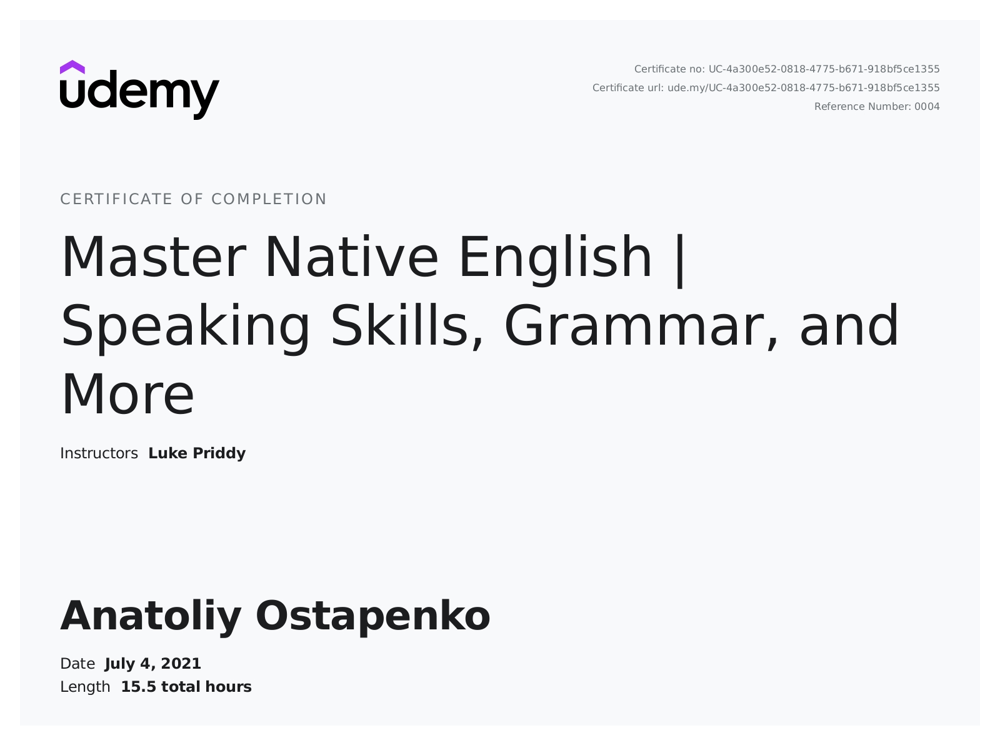

+38(067) 503-17-69
Kyiv, Ukraine
+38(067) 503-17-69
 anatoliy.ostapenko@gmail.com
anatoliy.ostapenko@gmail.com
 https://github.com/AnatoliyOstapenko
https://github.com/AnatoliyOstapenko
 https://www.linkedin.com/in/anatoliyostapenko
https://www.linkedin.com/in/anatoliyostapenko
Key skills:
Xcode, iOS, Swift, Git, Realm, Core Data, CocoaPods, Firebase, MVC pattern, API, Jira, Trello, 1C, CRM, B2C, B2B sales, team player.
Profile
Aspiring software engineer looking for my first professional experience in software developing.
I'm experience designing mobile applications for Apple iOS and is eager and willing to learn and take on additional responsibilities throughout an internship.
Education
2007-2009 University of Education Management NAPS of Ukraine, economic education, master's degree.
2000-2006 National Technical University of Ukraine, technical education, bachelor.
Knowledge of languages:
English – intermediate , Russian – fluent, Ukrainian - fluent
Work experience
Key Account Manager
Euromed, Kyiv, Ukraine
Medical equipment
August 2020 – currently
Development of B2B sales customers: OSCE, DTEK, UNDP, Red Cross.
Assortment and pricing management (> 120 SKU, multichannel price policy)
Searching and interaction with local and foreign manufacturers: United Chemical Technologies, Goizper, ZOLL, Hytera
Report preparation and analysis: weekly, monthly sales reports.
Certificates:
